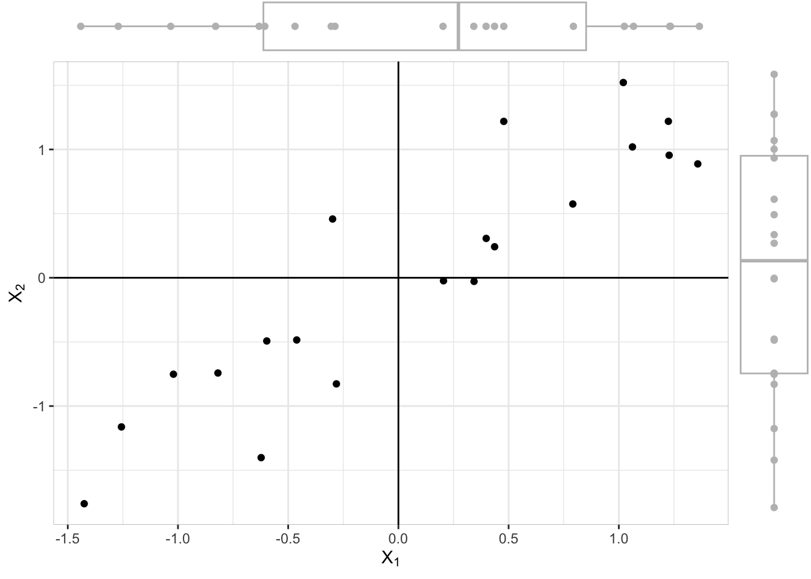

A primer on principle components analysis
Consider a random variable \(X=(X_1, X_2)^\top\) where both components are continuous and highly correlated with each other. Suppose a sample of \(n=20\) observations for each variable were obtained. This can be visualised in the scatterplot below.
If we remove the component of \(X_2\) by projecting all the 2-d points onto the \(X_1\) axis (via a linear transformation \(AX\), where \(A=(1, 0)^\top\)), we can inspect the marginal distribution of \(X_1\). In the plot above, we see this from the boxplot at the top of plot. We can also compute the variability, given by \(\mathop{\mathrm{Var}}(X_1)\). In a similar way we may do it for the other axis, and in particular, get a sense for the variability \(\mathop{\mathrm{Var}}(X_2)\).
Suppose we are tasked with summarising the variability in the data. One way to do this is to simply consider each of the individual variances in the data, \(\mathop{\mathrm{Var}}(X_1)\) and \(\mathop{\mathrm{Var}}(X_2)\). However this is not satisfactory, because in doing so we are ignoring the correlation between the two variables.
So the question we ask is, how can we determine the transformation that maximises the variability in the data onto one of the transformed axes?
Mathematics
Suppose \(X = (X_1,\dots,X_p)^\top\) is a \(p\)-dimensional random variable with expectation vector \(\mu\) and variance-covariance matrix \(\Sigma\). The goal is to find a new set of variables \(\tilde X = (\tilde X_1,\dots,\tilde X_p)\) that are
- linear combinations of the original variables, i.e. \[ \begin{align*} \tilde X_1 &= a_{11}X_1 + a_{12}X_2 + \dots + a_{1p}X_p \\ \tilde X_2 &= a_{21}X_1 + a_{22}X_2 + \dots + a_{2p}X_p \\ &\hspace{0.5em}\vdots \\ \tilde X_p &= a_{p1}X_1 + a_{p2}X_2 + \dots + a_{pp}X_p \end{align*} \] or simply \(\tilde X_j = a_j^\top X\) for some vector \(a_j = (a_{j1},\dots,a_{jp})^\top\);
- mutually uncorrelated, i.e. \(\mathop{\mathrm{Cov}}(\tilde X_j, \tilde X_k) = 0\) for \(j \neq k\); and
- ordered in terms of the amount of variability they explain, i.e. \(\mathop{\mathrm{Var}}(\tilde X_1) \geq \mathop{\mathrm{Var}}(\tilde X_2) \geq \dots \geq \mathop{\mathrm{Var}}(\tilde X_p)\).
We call the transformed variables \(\tilde X\) the principle components of \(X\). Since the first principle component contains the greatest variability, we require a transformation such that \[ \begin{gathered} \mathop{\mathrm{Var}}(\tilde X_1) = \mathop{\mathrm{Var}}(a_1^\top X) = a_1^\top \Sigma a_1 \end{gathered} \] is maximised, subject to the normalisation constraint \(a_1^\top a_1 = 1\). This constraint is not just one of convenience, but is required because otherwise we can simply scale \(a_1\) to infinity and \(\mathop{\mathrm{Var}}(\tilde X_1)\) will also go to infinity.
Lagrange multipliers are employed to maximing this function subject to the constraints: \[ L(a_1) = a_1^\top \Sigma a_1 - \lambda_1(1 - a_1^\top a_1). \] The first order condition for maximum is \[ \frac{\partial}{\partial a_1} L(a_1) = 2\Sigma a_1 - 2\lambda_1 a_1 = 0 \Leftrightarrow \Sigma a_1 = \lambda_1 a_1. \] Evidently this is an eigenvalue-eigenvector problem, and the solution is given by the eigenvector \(\tilde a_1\) corresponding to the largest eigenvalue \(\tilde\lambda_1\) of \(\Sigma\). Note that \(\Sigma\) has \(p\) non-negative eigenvalues since it is a positive definite matrix. Thus the first principal component is given by \(\tilde X_1 = \tilde a_1 X\).
As for the second principal component, it is as before except now we require an additional constraint that it is uncorrelated with the first principal component. In other words, \(a_2^\top a_1=0\). The function to be maximised is then: \[ L(a_2) = a_2^\top \Sigma a_2 - \lambda_2(1 - a_2^\top a_2) - \delta(a_2^\top a_1). \] Taking derivatives with respect to \(a_2\) and setting to zero, we obtain \[ \frac{\partial}{\partial a_2} L(a_2) = 2\Sigma a_2 - 2\lambda_2 a_2 - \delta a_1 = 0 \Leftrightarrow 2(\Sigma -\lambda_2 I)a_2 - \delta a_1 = 0. \] Premultiplying with \(a_1^\top\), and using \(a_1^\top a_1=1\) and \(a_1^\top a_2=0\), we obtain \(2a_1^\top\Sigma a_2 + \delta = 0\). From here, we see that \(\delta = 0\) since it is required that \(\mathop{\mathrm{Cov}}(\tilde X_1, \tilde X_2) = \mathop{\mathrm{Cov}}(a_1 X,a_2 X) =0\). Hence, we have another eigenvalue problem in \((\Sigma - \lambda_2 I)a_2=0\), which is solved by choosing \(a_2\) to be the eigenvector corresponding to the second largest eigenvalue of \(\Sigma\).
More generally
Denote the \(p \times p\) matrix of eigenvectors (component weights) by \[ \tilde A = \begin{pmatrix} \tilde a_1 & \tilde a_2 & \dots & \tilde a_p \end{pmatrix}. \] Due to the required restrictions, \(A\) is an orthogonal matrix, i.e. \(A^\top A = I\). The principal component transformation becomes \[ \tilde X = \tilde A^\top X, \] and the covariance matrix of the principal components is \[ \mathop{\mathrm{Var}}(\tilde X) = \tilde A^\top \Sigma \tilde A = \tilde \Lambda, \] where \(\tilde \Lambda=\mathop{\mathrm{diag}}(\tilde \lambda_1,\dots,\lambda_p)\) is the diagonal matrix of eigenvalues of \(\Sigma\).
Partitioning the variation
The total variation (sum of variances) of principal components equals the total variation of the original variables. This can be seen via \[ \sum_{j=1}^p \mathop{\mathrm{Var}}(\tilde X_j) = \sum_{j=1}^p \tilde a_j^\top \Sigma \tilde a_j = \mathop{\mathrm{tr}}(\tilde A^\top \Sigma \tilde A) = \mathop{\mathrm{tr}}(\tilde A \tilde A^\top \Sigma) = \mathop{\mathrm{tr}}(\Sigma) = \sum_{j=1}^p \mathop{\mathrm{Var}}(X_j). \] Now the \(j\)th principal component accounts for proportion \[ \frac{\mathop{\mathrm{Var}}(\tilde X_j)}{\sum_{j=1}^p \mathop{\mathrm{Var}}(X_j)} = \frac{\lambda_j}{\sum_{j=1}^p \lambda_j} = \frac{\lambda_j}{\mathop{\mathrm{tr}}(\tilde \Lambda)}. \] Often we keep the first \(m\) principal components that has a sufficiently large cumulative proportion of variability.
Principal components from correlations
Suppose the variables are standardised by applying \(X \mapsto \mathop{\mathrm{diag}}(\Sigma)^{-1/2}(X - \mu)\). Then, the covariance matrix of \(X\) becomes the correlation matrix \(R=\mathop{\mathrm{diag}}(\Sigma)^{-1/2} \Sigma \mathop{\mathrm{diag}}(\Sigma)^{-1/2}\). In this case, each \(\mathop{\mathrm{Var}}(X_i)=1\) and the total variation is \(p\). Therefore the the \(i\)th principal component accounts for proportion \(\lambda_i/p\) of the total variation. Note that the eigenvectors are not scale invariant, i.e. the eigenvectors of \(R\) are different from the eigenvectors of \(\Sigma\).
Canonical correlation analysis
Canonical correlation analysis (CCA) is a multivariate technique that seeks to find linear combinations of two sets of variables that have maximum correlation with each other.